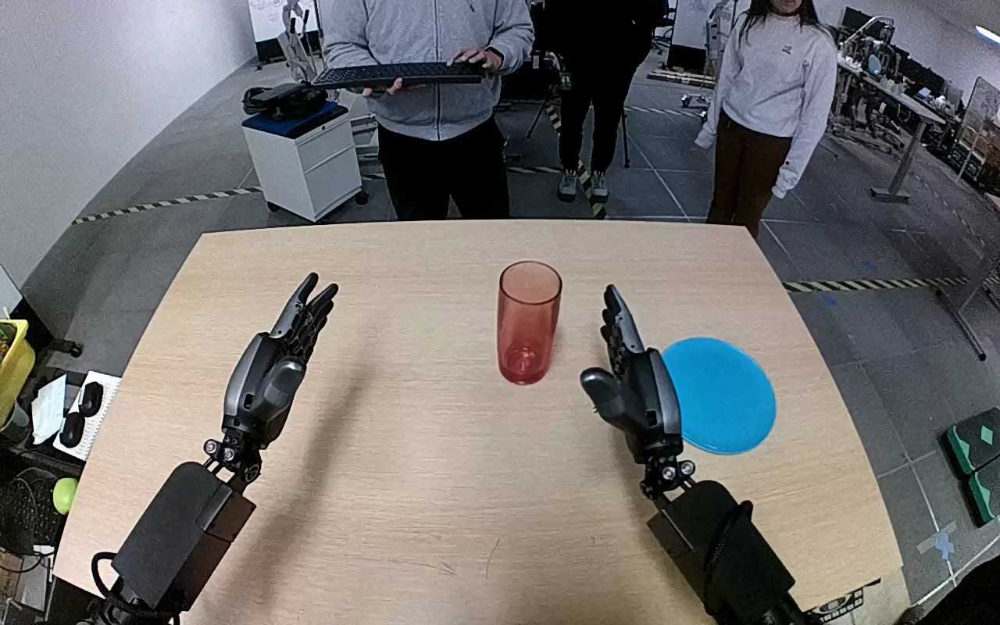

NVIDIA GR1 · 38
Video 38

Visual review action_review.json
{
"prompt_protocol": "humanoid_action_v1",
"prompt_provenance": "visually_authored_from_video_and_initial_frame",
"reviewed_contact_sheets": [
"sheet_001.jpg"
],
"inspected_frame_stride": 2,
"inspected_sampled_frame_count": 60,
"initial_scene": "Robot-facing-forward view over two articulated humanoid hands and forearms, with an upright tall translucent red cylindrical glass near table center and a blue plate to its right. The hands are initially open and neither touches the glass.",
"observed_sequence": [
{
"start_frame": 0,
"end_frame": 21,
"action": "Both hands are open; the red glass stands upright on the table, with the blue plate beside it. The left hand remains inactive throughout.",
"confidence": "high"
},
{
"start_frame": 22,
"end_frame": 55,
"action": "The right arm moves inward toward the glass, bringing the open thumb and fingers around its sides while the glass remains upright on the table.",
"confidence": "high"
},
{
"start_frame": 56,
"end_frame": 75,
"action": "Right fingers curl around the glass against the thumb, securing it and lifting it clear of its original position.",
"confidence": "high"
},
{
"start_frame": 76,
"end_frame": 97,
"action": "The right hand transports the glass toward the blue plate; the wrist rotates so the glass tilts substantially from upright, then lowers it across the plate.",
"confidence": "high"
},
{
"start_frame": 98,
"end_frame": 111,
"action": "The right hand retains contact around the tilted glass over the plate, adjusting its position while the left hand remains away.",
"confidence": "high"
},
{
"start_frame": 112,
"end_frame": 119,
"action": "The right fingers open and the glass settles onto its side across the plate. By the final frame the hand is open beside the glass, which lies horizontally on the plate.",
"confidence": "high"
}
],
"arm_hand_roles": {
"right": "Sole manipulating hand: grasps glass with fingers and opposed thumb, lifts, transports, tilts, lowers, and opens to release it on the plate.",
"left": "Open and largely stationary away from the object; no grasp, support, transfer, or plate stabilization.",
"coordination": "Single-hand manipulation; no hand-to-hand coordination or interaction with a person."
},
"anatomical_side_evidence": {
"description": "Both forearms extend forward from the lower edge in a robot-facing-forward camera view. The active hand is connected to the forearm entering from the robot-right lower side; its opposed thumb lies on the medial side toward the other hand. The mirrored thumb placement of the idle hand supports anatomical right/left naming rather than relying only on image position. The torso and shoulders are outside the view.",
"confidence": "high",
"uncertainty": "No shoulder attachment is visible, but paired forearm direction and thumb handedness establish the side."
},
"coordination": "Right-hand-only task; the left hand stays open and does not support the glass or plate.",
"evidence_frame_indices": [
0,
32,
62,
80,
96,
112,
116,
118,
119
],
"initial_png_inspected_at_native_resolution": true,
"inspection_coverage": {
"complete_source_frames": 120,
"sampled_frames_viewed": 60,
"sampled_frame_indices": "0,2,4,...,118",
"all_contact_sheets_viewed": true,
"native_transition_and_terminal_frames": [
32,
62,
80,
96,
112,
116,
118,
119
],
"native_dimensions": [
1280,
800
]
},
"terminal_state": "Red glass is released lying on its side across the blue plate. The right fingers are open beside the glass; the left hand remains open away from it. No upright placement or withdrawal is observed.",
"selected_execution_status": "success",
"execution_status_basis": "The glass is visibly moved from its initial table position and released onto the plate. Success here denotes completed transport onto the plate, retaining the observed sideways orientation rather than inferring an upright placement.",
"uncertainties": [
"The exact onset of glass-to-plate contact is partially obscured by the right hand; the sideways plate-supported final state and opening fingers are visible."
],
"annotation_discrepancies": [],
"annotation_comparison": "Original instruction names the right hand, red glass, and blue plate destination, matching the observed manipulation. It does not specify terminal orientation; the usable prompt explicitly preserves the observed sideways ending.",
"video_id": "38",
"dataset": "NVIDIA_GR1_100",
"dedicated_review_agent": "review_gr1_38",
"review_source_video": "NVIDIA_GR1_100/38/original/original.mp4",
"source_frame_count": 120,
"source_fps": 20.0,
"native_detail_frames": [
32,
62,
80,
96,
112,
116,
118,
119
],
"world_model_prompt": "The robot closes its right hand around the tall red glass, lifts it from the table, and carries it toward the blue plate. It tilts the glass while lowering it onto the plate, then opens its fingers, leaving the glass lying on its side with the right hand beside it. Keep the camera fixed; preserve robot geometry, physically valid joint motion, and normal gripper opening and closing.",
"original_task_instruction": "Use the right hand to pick up tall red glass from center of tan table to center of bright blue plate.",
"selected_segment": {
"start_frame": 0,
"end_frame_exclusive": 120,
"reason": "Complete original single-task reference; no cropping or trimming requested."
},
"source_video_sha256": "b68e0dba225f56240d11af118bf71e65a0e6afbceaa303fc9501078dffa504df",
"review_completed_at": "2026-10-13T18:02:30.643511+00:00"
}